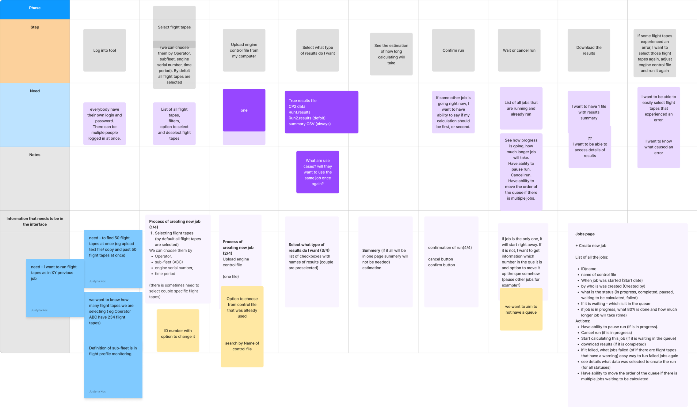
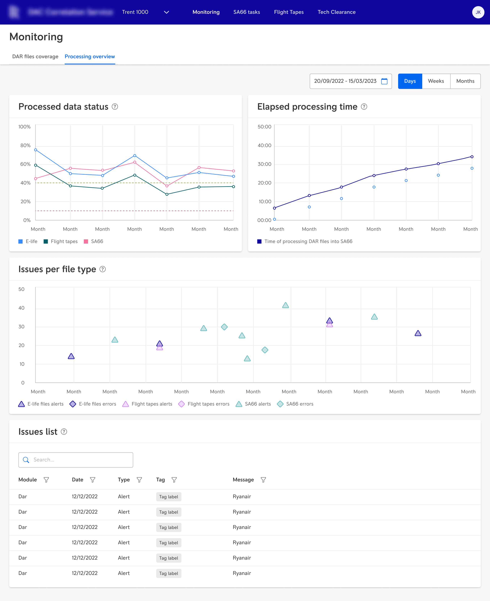
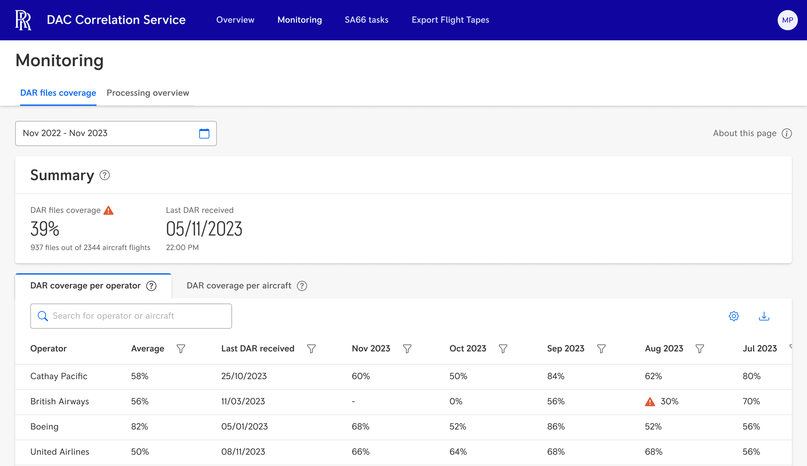
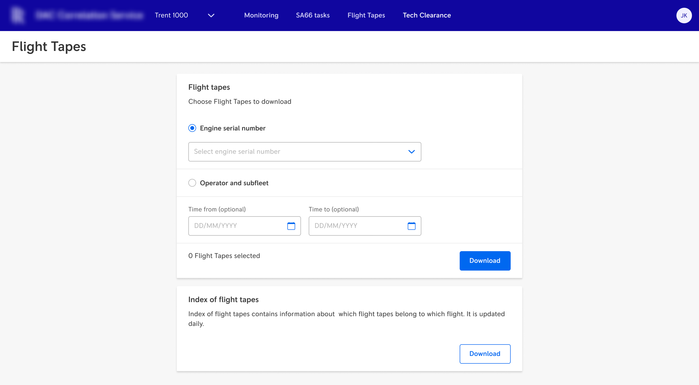
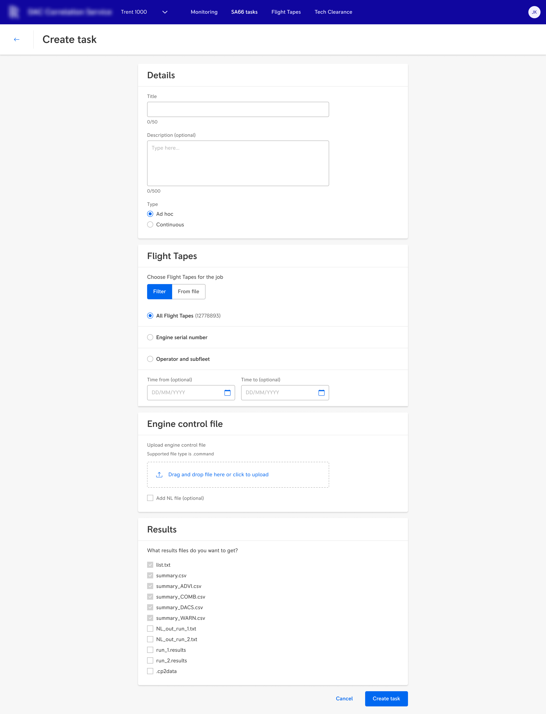
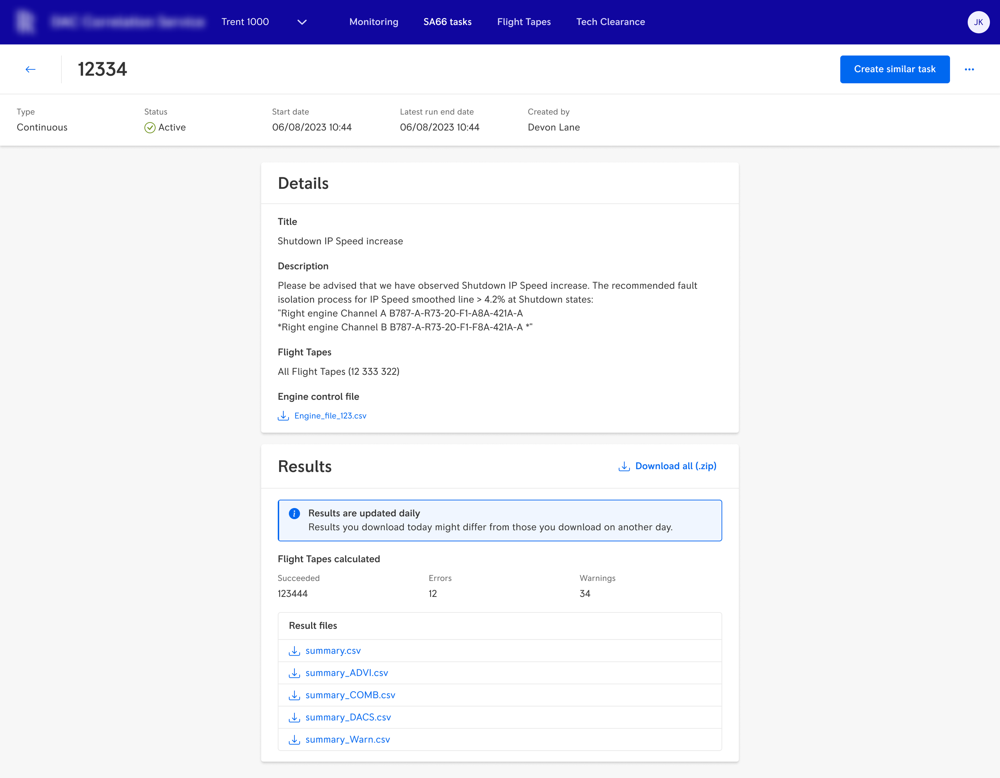
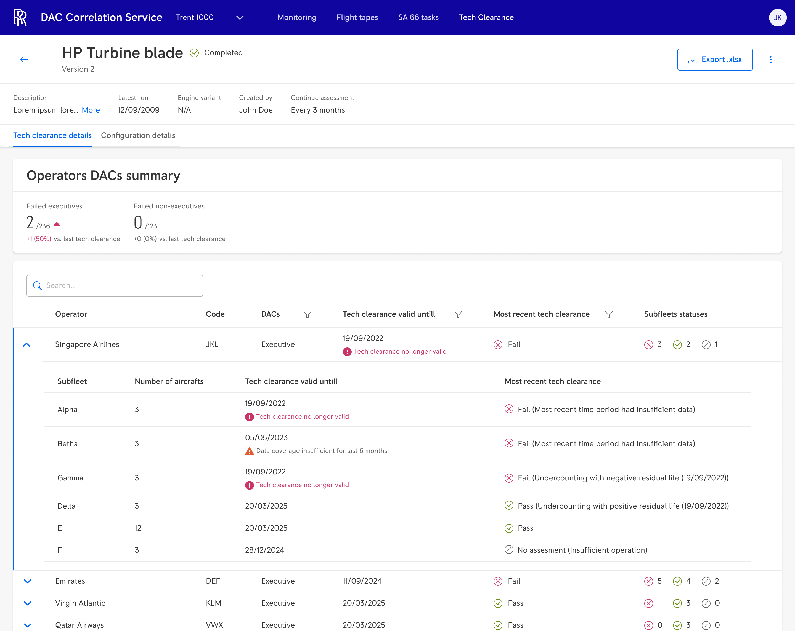
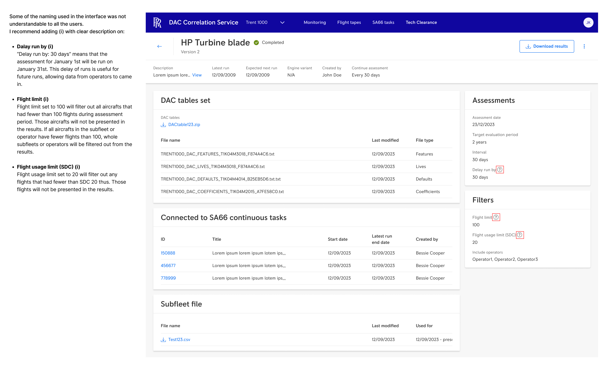

The problem
My client's engineering team used a method called DAC Correlation to validate aircraft engine behaviour. The method itself was sound. The process around it wasn't.
Before this project, that complexity lived entirely inside individual engineers' heads and their Excel files.
One engineer had built his own process for creating tech clearance reports — documents that prove the DAC method is safe to use. He was the only person who could run it. He was the only person who understood his own spreadsheet. If he'd been hit by a bus, that knowledge would have disappeared with him.
Another engineer needed to download roughly a third of his hard drive's worth of raw data onto his local machine every time he ran a calculation. His computer slowed to a crawl. Then he'd do the calculations and delete the files until next time.
These weren't edge cases. This was the standard way of working.
My role
I was the sole UX Designer and Researcher on the project. I owned requirements gathering, user interviews, wireframing, mockups, feedback cycles with users and business stakeholders, usability testing, and developer handoff. I collaborated with a Product Owner and front-end and back-end development teams.
The portal was developed and released tab by tab during my time at the company.
Process
I started with in-depth interviews with the engineers who owned each part of the workflow. My goal wasn't to understand the aeronautical calculations — that's deep domain expertise that takes years to build. My goal was to understand how engineers worked: what data they needed at each step, what they were doing manually that could be automated, and where things went wrong.
The interviews surfaced the hard drive problem, the single-point-of-failure problem, and a broader pattern: every engineer had built their own workaround, none of those workarounds were visible to anyone else, and the whole system depended on institutional memory that could disappear at any time.

User journey for the tech clearance process — mapping the existing workflow step by step, capturing what users needed at each stage and what information had to be present in the interface. This became the foundation for the application's structure.
Some early ideas didn't survive contact with users — including some of mine.


Early interface versions. One engineer wanted to replicate his existing Notepad-to-Python workflow exactly — familiar, but inaccessible to anyone else. I wanted to add charts to make the data more visual; users pushed back. Too much data, too many variables — charts would have been noise, not insight. These versions didn't make it in. That's the research doing its job.
The solution
The portal shipped as four dashboards, released incrementally. Each tab was designed, handed off, and tested with end users before the next one began.

The Monitoring dashboard tracks incoming raw data files from operators and gives engineers visibility into the processing pipeline — whether files are arriving as expected and whether anything is being lost along the way. Replacing a process where problems only became visible after calculations had already gone wrong.

Flight Tapes replaced the process of downloading roughly a third of a hard drive's worth of raw data onto a local machine for every calculation. Engineers now filter by date and operator and download only what they need.
Engineers use SA66 to work on the engine control file used to process raw DAR files. They test the file against Flight Tapes and when satisfied, the file becomes the new active version used in processing.


Left: creating a new SA66 task — selecting flight tapes, uploading the engine control file, and choosing result types. Right: the task details view showing calculation results, succeeded and failed flight tapes, and downloadable result files.

Tech clearance reports now generate automatically on a schedule, based on all available data. The dashboard shows which operators passed or failed their tech clearance and why — including reasons like insufficient data coverage. A process that only one person understood is now accessible to the whole team.
Usability testing
Each tab was tested with end users after release — at minimum 5 participants per round, none of whom had been involved in the design process. The Tech Clearance tab scored 83.1 on the System Usability Scale, placing it firmly in the "Excellent" range.
Testing surfaced a consistent issue across several tabs: some interface labels weren't understood by users — even though all participants were aeronautical engineers and I had assumed the terminology would be familiar. It wasn't. The fix was straightforward: adding (i) tooltips with plain-language explanations next to the labels that caused confusion.

One of several post-testing recommendations documented in Figma. Labels like "Delay run by", "Flight limit", and "Flight usage limit (SDC)" were misunderstood by users. The recommendation: add (i) icons with clear descriptions explaining what each parameter means and how it affects the results.
Outcome
The engineer who used to download a third of his hard drive every time he ran a calculation no longer does that.
The tech clearance process that only one person understood is now documented, automated, and accessible to the whole team.
Knowledge that lived in individual spreadsheets and Notepad files now lives in a shared, reliable system. The bus factor went from one to many.
What I learned
In highly specialised domains, the designer's job is to understand the workflow, not the subject matter. Knowing when to stop learning the domain and start designing the interface is a skill in itself.
I also learned that features which sound useful in theory — charts, alerts, flexible inputs — can become noise if the domain isn't ready for them. Users who couldn't define their own thresholds were telling me something important: the feature wasn't ready, and neither were they.
And: never assume that shared domain expertise means shared vocabulary. Even among engineers who work with the same systems every day, the words designers choose matter.